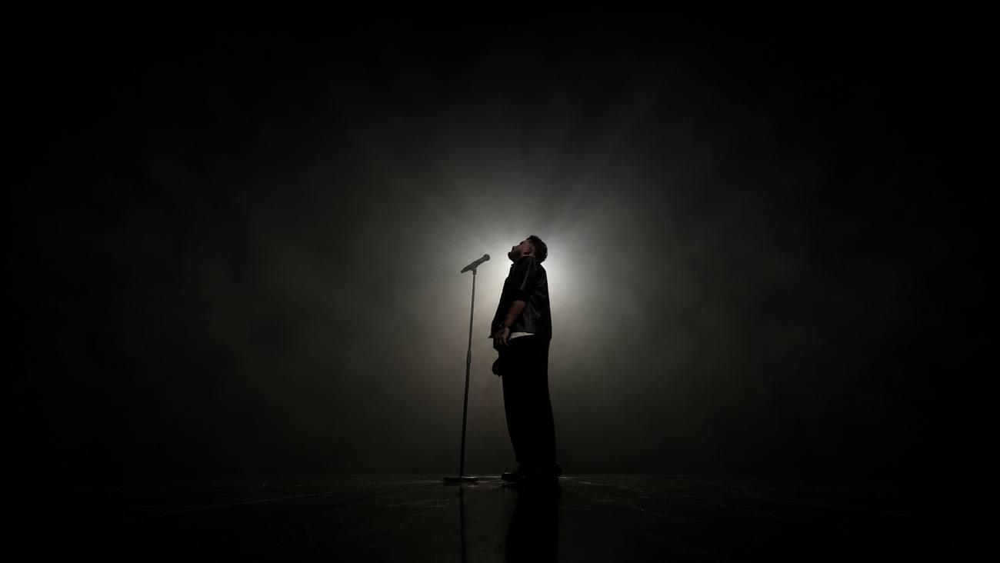

Accueil › Entreprise
Animation musicale pour vos événements d'entreprise à Bordeaux
Séminaires, soirées de gala, lancements, remises de prix : un show live soigné, avec sa propre sonorisation et son ingénieur son et lumière. Vous recevez vos invités, on s'occupe de l'ambiance.
- Son et lumière inclus
- Devis sous 24 h
- Basés près de Bordeaux

Un show live à l'image de votre entreprise
Une soirée d'entreprise réussie, ce sont des collaborateurs et des clients qui en parlent encore le lendemain. La musique live crée ce moment partagé, sans prendre la place de vos prises de parole.
Séminaires
Un temps fort en fin de journée ou pendant le dîner pour fédérer vos équipes.
Soirées de gala
Un show élégant qui monte en puissance, du cocktail jusqu'à la soirée dansante.
Lancements et remises de prix
Une ambiance live autour de vos annonces, avec la technique déjà sur place.
Son et lumière inclus
Antonin, notre ingénieur, installe et règle tout : vous n'avez pas de prestataire technique en plus à trouver.
Comment ça se passe
Votre brief
Date, lieu, nombre de participants, programme de la soirée : vous recevez une proposition sous 24 h.
La réservation
La date est bloquée en ligne avec un acompte de 100 €, déduit du total. Le solde est réglé au plus tard 7 jours avant.
La préparation
On cale ensemble le déroulé : horaires, moments de discours, style musical, éventuels titres à préparer.
Le jour de l'événement
Installation environ 2 h avant, réglages, puis un show adapté à votre programme. Démontage en toute discrétion.
Ce qui est inclus
- Le chant live d'Alex Juan, en français avec une touche d'anglais
- La sonorisation et l'éclairage professionnels
- Un ingénieur son et lumière présent à chaque prestation
- Un déroulé adapté à vos horaires et à vos prises de parole
- Les frais de déplacement, indiqués dans le devis
- Un devis clair, avec facture pour votre comptabilité
Vous voulez entendre la voix avant de vous décider ? Regardez nos vidéos et parcourez le répertoire.
Bordeaux, Gironde et partout en France
Hôtels, domaines, salles de séminaire, lieux atypiques : basés à Bruges, près de Bordeaux, nous nous déplaçons partout où se tient votre événement.
- Bordeaux
- Bruges
- Mérignac
- Pessac
- Talence
- Le Bouscat
- Bassin d'Arcachon
- Cap-Ferret
- Libourne
- Saint-Émilion
- Médoc
- Lacanau
- Entre-deux-Mers
- Toute la Gironde
- Nouvelle-Aquitaine
- Partout en France
Questions fréquentes
Combien coûte une animation musicale pour une soirée d'entreprise ?
Le tarif dépend de la durée, du lieu et du programme. Nous vous envoyons un devis gratuit et détaillé sous 24 h.
Pouvez-vous jouer pendant le dîner sans gêner les conversations ?
Oui : les sets du dîner sont pensés pour laisser place aux échanges et aux discours. Le volume et le rythme montent ensuite pour la soirée.
Peut-on utiliser votre sonorisation pour les discours ?
Parlez-nous de vos prises de parole lors de la préparation : nous regardons ensemble ce qui est possible avec notre installation.
De quoi avez-vous besoin dans la salle ?
D'une prise électrique 230 V, d'un espace d'environ 3 × 3 m et d'un accès environ 2 h avant le début pour l'installation.
Combien de temps dure la prestation ?
De 1 h à la soirée entière, selon votre programme.
Intervenez-vous hors de Bordeaux ?
Oui, dans toute la Gironde, en Nouvelle-Aquitaine et partout en France. Les frais de déplacement sont indiqués dans le devis.
Vous préparez un événement ?
Envoyez-nous la date, le lieu et le programme : vous recevez une proposition sous 24 h.
06 27 33 03 80